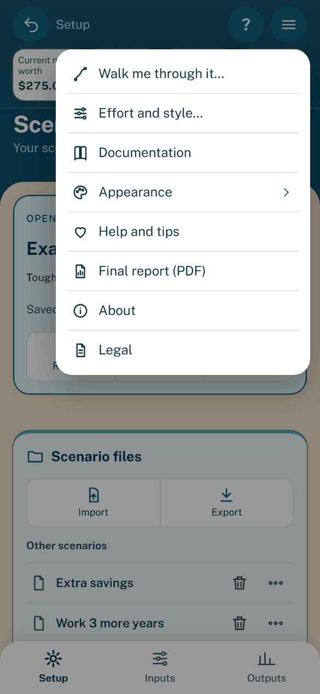
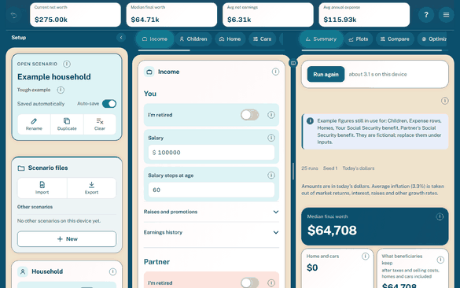

The app
Purpose: use the planner in your browser, and find which page explains each screen.
The app runs the whole Python model in the browser and keeps your scenarios on the device. It sends nothing anywhere. The rules behind each settings group are in Model rules by group.
Page |
What it covers |
|---|---|
Setup and the Inputs groups. |
|
Scenarios, effort and style, and the Walkthrough. |
|
Monte Carlo, Compare, Optimize and the final report. |
The app at a glance
Three tabs at the bottom hold everything (Gamer style adds a fourth, Awards). The pictures show the example household on a phone.

Setup: the open scenario, other scenarios and the household.

Inputs: one chip per settings group; swipe sideways to move between them.

Outputs, Summary: the headline figures from the Monte Carlo runs.

Optimize: one card per change that improves the score (now → recommended and its gain), the total, and the settings kept folded into one line.

The timeline’s one Add screen (Cancel and Save in its footer, under the fields).

Final report (PDF): tick up to four saved scenarios to compare.


The menu.

The Walkthrough asks one question at a time.

The effort and style picker.
How it runs
The first load downloads about 20 MB and shows each start-up step. It takes about 20 seconds on a phone; later loads are faster.
Every edit reruns the model after a short pause. The status pill says “Updating” meanwhile.
If the settings are not valid, the pill says “Check settings”. The last valid figures stay on screen, dimmed.
Your settings are saved in the browser as you edit and return on the next visit.
A saved draft the page cannot read is dropped. The page then opens on the example household with a message.
Drafts, scenarios and files from an older version are upgraded when opened. Export a file to keep the new format.
Layouts
Layout |
What you get |
|---|---|
Phone |
A bottom tab bar. Chips inside each tab pick a view. |
Wide |
From 1100 px wide, it switches by itself. Setup, Inputs and Outputs sit side by side under one banner with the headline figures. |


The wide layout.
In the wide layout:
Drag the divider between Inputs and Outputs to give one more room.
Hover the divider’s icon for three buttons: Show only Outputs, Split equally and Show only Inputs. Double-click also splits equally.
With the keyboard, Left and Right move the divider. Home shows only Outputs, End only Inputs, and Enter splits equally.
Click the bar above Setup to fold it to a thin rail. Click the rail to bring it back. Anything that needs Setup unfolds it.
Both choices are kept on this device.
Moving between views
Every tab, view and chip opens at its top.
Your open group, chosen chips and typed text stay as they were.
A running Monte Carlo or comparison continues while you look at another tab.
Swipe sideways on Inputs or Outputs to step to the next group or view. Swipes never change the bottom tabs. Chips and buttons do everything a swipe does.
Arrow keys, Home and End move between tabs.
The bottom bar hides while the keyboard is up.
Look and color scheme
The header band keeps Undo, the place name, the status pill, the ? button, the menu and the headline figures in view.
A pin button on the chips rows lets them scroll away to give the page more room. The choice is kept on this device.
Settings sit on cards with an icon and a title. Each Benefits card has an on/off switch beside its title.
Appearance, in the menu, holds the color schemes. The choice applies at once and is kept in this browser.
The schemes are Lagoon and hibiscus (the default), Sunset over the motu, Palm and sand, Night lagoon (dark) and Match phone (light or dark, as your phone is).
A color scheme changes no figure. Text colors meet the WCAG AA contrast ratio (4.5:1).
Effort and style cues
Your effort and style choice adds a glow, an edge and a sheen to the panels. See Effort and style.
Effort: Low is a calm blue, Medium a warm gold and High a hot red.
Style: Accountant is a calm slate, Coach a clean green and Gamer a pink and violet glow.
Cues grow from Low to High and from Accountant to Gamer. Low and Accountant are calm but visible; High and Gamer glow strongly.
They change shadows, edges and backgrounds only, so text keeps its AA contrast. They never change a figure, a saved file or a chart color.
With reduced motion, they stay still. High contrast, forced colors and print turn them off.
The tour
The ? button opens a tour of the controls. A ring marks one control at a time, with a card that names it.
Use Back, Next and the close button. Escape also closes it.
On a first visit, it opens once, after the first Walkthrough ends.
It starts with what shows on every page, then goes through Setup, Inputs and Outputs, top to bottom.
If a step is on another page, the card tells you what to tap. Nothing moves on by itself.
When it ends, the tour puts back the tab, view and scroll you started from.
Help
Explanations are tooltips. Tap the “i” beside a field, a heading, a tile or a chart title to show the text. Tap again to hide it.
Every field and every pane has a tooltip.
Warnings, errors, run-state lines and numbers stay on screen.
A long caption keeps a short line on screen, with an “i” for the rest.
The Optimize not-advice line always stays on screen.
A red “i” marks a field the model reduces by mean inflation when Inflation-adjusted dollars is off. See Inflation and dollars.
App limits
The page needs WebAssembly in a worker. It loads nothing from a CDN.
The first load is about 20 MB; the host serves it compressed and cached.
One run takes about 0.2 s on a phone, so the headline figures update as you type.
Runs offers 25 (the default), 50 or 100. 25 runs take about 10 s on a phone.
Compare runs exactly two configs, each with the same Runs, and only on its Run button.
A scenario file holds at most 50 accounts, 50 loans, 20 cars, 20 homes, 20 children, 100 salary-history years, 200 expense rows and 200 rows in any other list. See Scenarios on Setup.
Saved scenarios live in this browser only, at most 50. Export a file to keep one elsewhere or to move it to another device.
Wide tables scroll sideways, with the first column kept in view.
If a phone shows the old version after a republish, reload the page.
See also
Model rules by group: what the model does with each settings group.